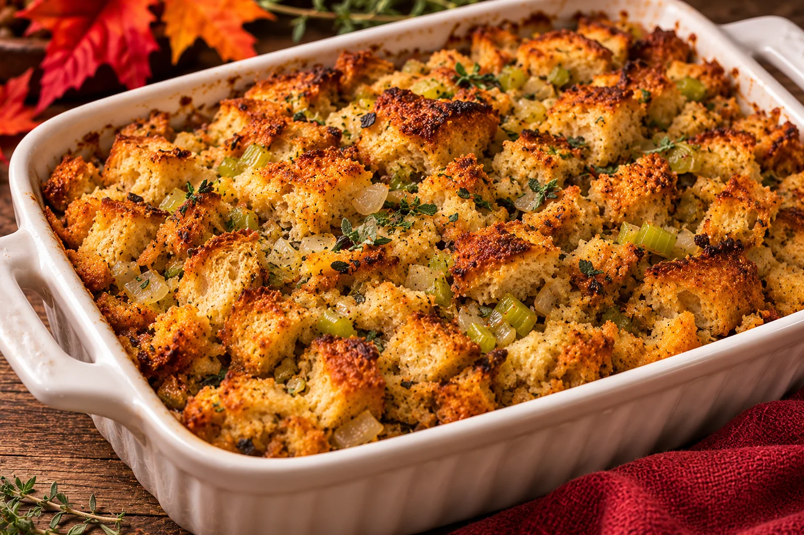
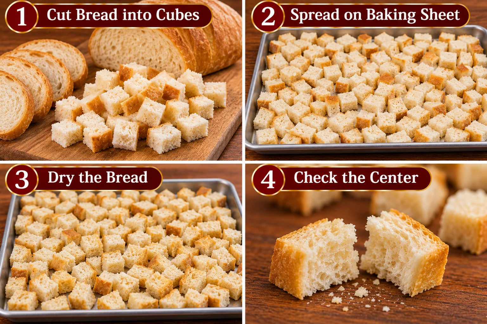
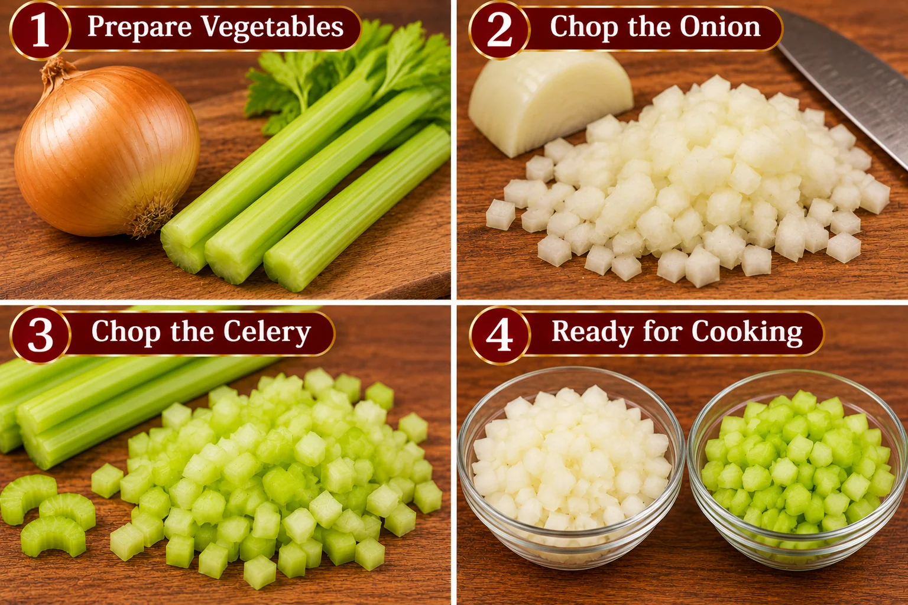
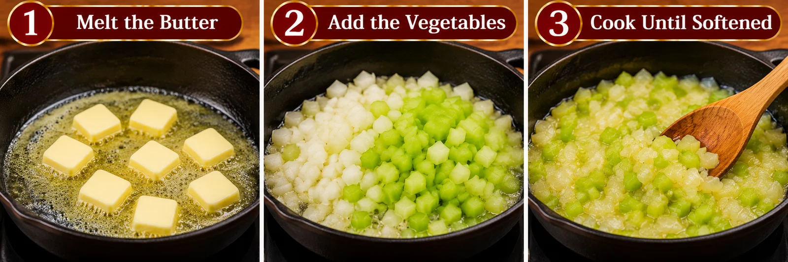
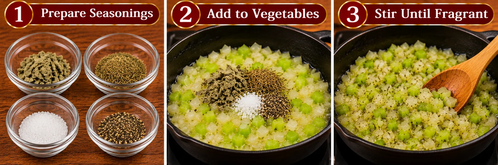
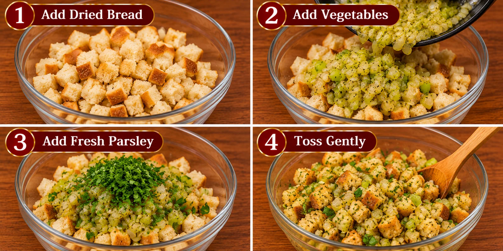
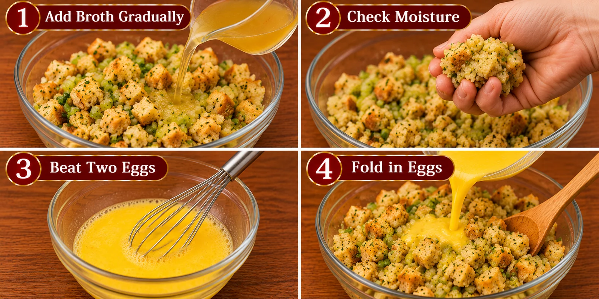
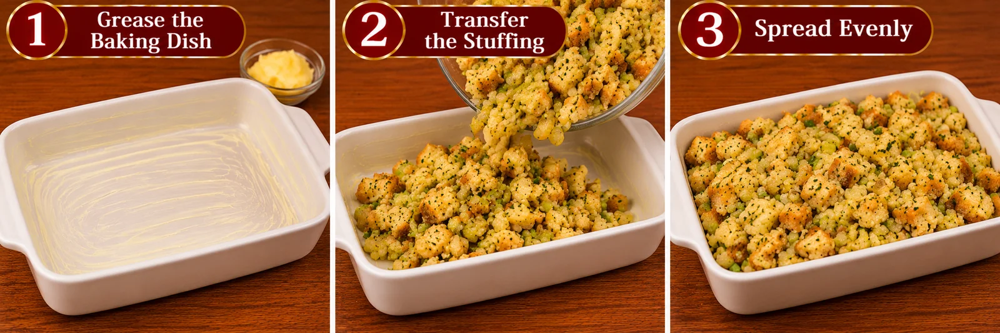
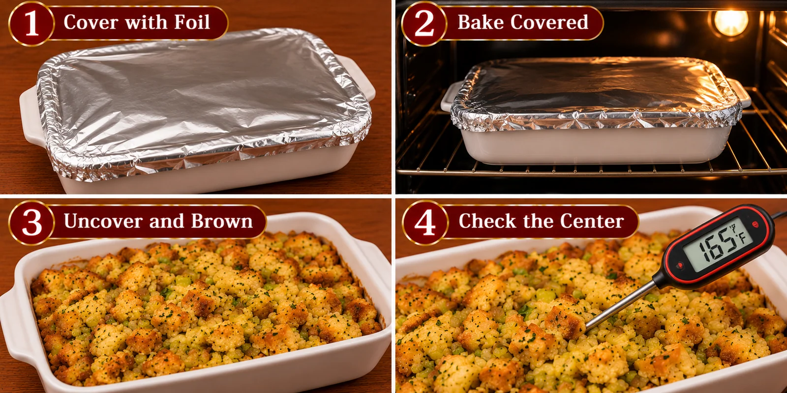
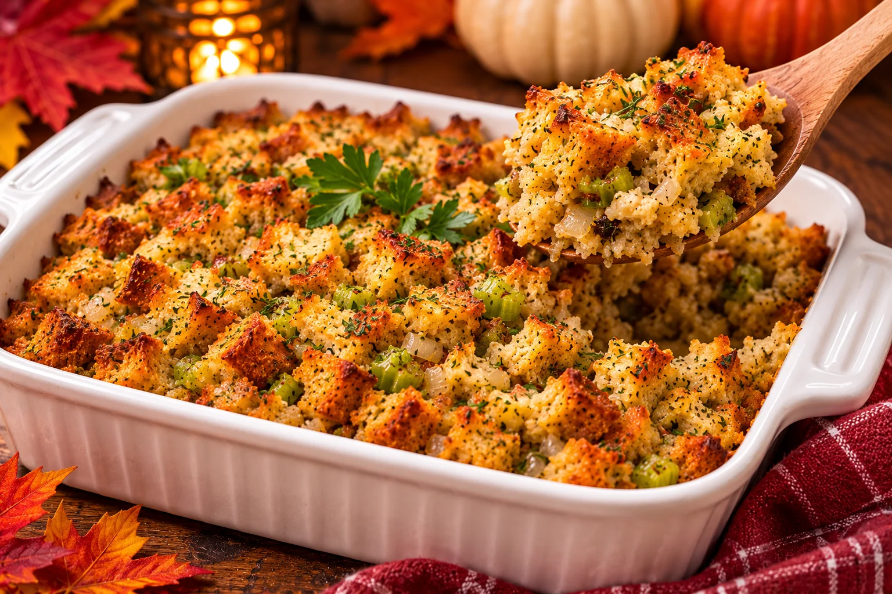

Traditional Homemade Bread Stuffing
Buttery, savory bread stuffing with tender vegetables, classic herbs, a moist center, and a lightly crisp golden top.
Difficulty: Beginner • Total time: About 60–80 minutes, plus drying bread if needed
Equipment: Large bowl, skillet, 9 × 13-inch baking dish, baking sheet, measuring tools, foil, food thermometer.

Ingredients
| Ingredient | Amount |
|---|---|
| Sturdy white, French, or Italian bread | 12 cups dried, ¾-inch cubes |
| Unsalted butter | 8 tablespoons (1 stick) |
| Yellow onion | 1 medium, about 1 cup chopped |
| Celery | 3 stalks, about 1 cup chopped |
| Low-sodium chicken or turkey broth | 2 cups, plus up to ½ cup as needed |
| Large eggs | 2 |
| Dried rubbed sage | 1½ teaspoons |
| Dried thyme leaves | ¾ teaspoon |
| Fine sea salt | ½ teaspoon, plus to taste |
| Black pepper | ½ teaspoon |
| Fresh parsley, chopped | 2 tablespoons |
| Butter or cooking spray | For greasing baking dish |
Before You Start and Equipment
Dried bread absorbs seasoned broth without falling apart. This recipe uses butter, onion, celery, sage, thyme, and eggs, then bakes the stuffing separately in a casserole dish. Add broth gradually because different breads absorb different amounts.
Choose sturdy white, French, or Italian bread. French or Italian bread makes firmer stuffing; sandwich bread is softer. For smooth preparation, use dried cubes rather than fresh bread.
Step-by-Step Instructions
1. Dry the bread
Cut enough bread into ¾-inch cubes to yield 12 cups after drying. If fresh, spread in a mostly single layer on baking sheets and bake at 250°F for 30–45 minutes, stirring halfway. Cool a cube briefly and break it: the center should be dry, not soft or doughy. Continue another 5–10 minutes if needed. Packaged plain, unseasoned dry cubes can be used without this step.

2. Chop the vegetables
Peel and chop 1 medium yellow onion into approximately ¼-inch pieces (about 1 cup). Wash and chop 3 celery stalks to a similar size (about 1 cup). If adding garlic, mince 2 cloves and set aside.

3. Soften the vegetables
Melt 8 tablespoons unsalted butter in a large skillet over medium heat. Add 1 cup onion and 1 cup celery. Cook 8–10 minutes, stirring occasionally, until the onion looks translucent and the celery softens; browning is not necessary. If using 2 cloves minced garlic, add during the last minute. If using salted butter, omit the initial ½ teaspoon salt in the next step.
Make it your own: Optional: cook 2 minced garlic cloves with the vegetables near the end of this step. For a sausage variation, add ½ pound fully cooked, crumbled breakfast sausage when combining the bread in Step 5.

4. Add herbs
Reduce heat to low. Stir in 1½ teaspoons rubbed sage, ¾ teaspoon dried thyme, ½ teaspoon fine sea salt (omit initially if using salted butter), and ½ teaspoon black pepper. Stir 30–60 seconds until fragrant, then turn off heat. Optional: add ¼ teaspoon dried rosemary.
Make it your own: For a rosemary variation, add ¼ teaspoon dried rosemary here. If using finely ground sage instead of rubbed sage, start with ½ teaspoon. Fresh herb alternatives: 1½ tablespoons chopped fresh sage or 2¼ teaspoons fresh thyme leaves.

5. Combine with bread
Place 12 cups dried bread cubes in a large mixing bowl. Pour in the buttery vegetable mixture and add 2 tablespoons chopped fresh parsley. Toss gently until the butter and vegetables are distributed; bread may still look dry.

6. Add broth and check moisture
Measure 2 cups low-sodium chicken or turkey broth. Pour in about 1 cup and toss gently. Add the remainder in ½-cup portions, giving the bread a minute or two to absorb it. Gently squeeze a small handful: it should hold together loosely without dripping or pooling liquid. If dry and crumbly, add 2 tablespoons more broth at a time, up to another ½ cup. Do not automatically use all the extra broth.

7. Add eggs
Beat 2 large eggs in a small bowl until combined. Let the bread mixture cool enough that the eggs will not cook on contact, then gently fold in the eggs. Do not taste uncooked stuffing after adding raw eggs.

8. Fill the baking dish
Heat oven to 350°F. Lightly grease a 9 × 13-inch baking dish. Spoon in stuffing, spreading evenly without compacting it. Cover with aluminum foil. For a richer top, reserve 1 tablespoon melted butter to drizzle on when foil is removed.
Make it your own: For a richer golden top, drizzle with 1–2 tablespoons melted butter before baking.

9. Bake and check temperature
Bake covered at 350°F for about 30 minutes. Carefully remove foil, avoiding steam, and bake uncovered for 10–25 minutes more. The top should be lightly golden and the center must reach 165°F on a food thermometer. If browning too fast, replace foil loosely. For a crisper top, bake a few extra minutes only after the center is fully cooked.

10. Rest and serve
Rest about 5 minutes before spooning into a serving dish. Serve warm with roasted poultry, pork, or another main dish.
Troubleshooting
Dry: Add a little warm broth; avoid overbaking next time.
Soggy: Use less broth and drier bread next time; uncover briefly if fully cooked.
Bread falls apart: Choose sturdier bread and toss more gently.
Crunchy vegetables: Soften onion and celery before mixing.
Top browns too quickly: Cover loosely while center finishes cooking.
Bland: Adjust herbs and salt on the next batch; serve with gravy.
Too salty: Use unsalted butter and low-sodium broth next time.
Make-Ahead, Holding, Storage, and Reheating
To prepare ahead, dry the bread, chop the vegetables, and measure the herbs the day before. Cool dried bread fully and store airtight; refrigerate chopped vegetables. For the simplest workflow, wait until baking day to mix broth and raw eggs into the bread. Alternatively, bake completely, cool promptly, refrigerate, and reheat.
For hot holding, keep stuffing at 140°F or higher, verified in the center with a food thermometer. A Warm oven setting is suitable only if it actually maintains that food temperature. If safe holding is not possible, refrigerate promptly.
Refrigerate leftovers in shallow containers within 2 hours at 40°F or below, for 3–4 days. To reheat, add about 1–2 tablespoons broth per 2 cups if dry, cover and heat in an oven at 325°F or higher until the center reaches 165°F. Freeze cooked stuffing in airtight containers for best quality within 2–3 months.